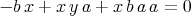
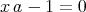
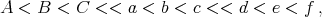

Chapter 18
Ordering on variables and monomials
As was mentioned above (Section 10.4.1), one needs to declare a monomial order before making a
Gröbner Basis. There are various monomial orders which can be used when computing Gröbner
Basis. The most common are called lexicographic and graded lexicographic orders. In the previous
section, we used only graded lexicographic orders. See Section 18.1 for a discussion of lexicographic
orders.
We will be considering lexicographic, graded lexicographic and multi-graded lexicographic
orders. Lexicographic and multi-graded lexicographic orders are examples of elimination orderings.
An elimination ordering is an ordering which is used for solving for some of the variables in terms
of others.
We now discuss each of these types of orders.
18.1 Lex Order: The simplest elimination order
To impose lexicographic order a << b << x << y on a, b, x and y, one types
In[14]:=SetMonomialOrder[a,b,x,y];
|
This order is useful for attempting to solve for y in terms of a, b and x, since the highest
priority of the GB algorithm is to produce polynomials which do not contain y. If producing high
order polynomials is a consequence of this fanaticism so be it. Unlike graded orders, lex orders pay
little attention to the degree of terms. Likewise its second highest priority is to eliminate
x.
Once this order is set, one can use all of the commands in the preceeding section in exactly the
same form.
We now give a simple example how one can solve for y given that a,b,x and y satisfy the
equations:



In[15]:= NCMakeGB[{-b ** x + x ** y ** a + x ** b ** a ** a,
x**a-1,a**x-1},4];
Out[15]= {-1 + a ** x, -1 + x ** a, y + b ** a - a ** b ** x ** x}
|
If the polynomials above are converted to replacement rules, then a simple glance at the results
allows one to see that y has been solved for.
In[16]:= PolyToRule[%]
Out[16]= {a ** x -> 1, x ** a -> 1, y -> -b ** a + a ** b ** x ** x}
|
Now, we change the order to
In[20]:=SetMonomialOrder[y,x,b,a];
|
and do the same NCMakeGB as above:
In[21]:= NCMakeGB[{-b ** x + x ** y ** a + x ** b ** a ** a,
x**a-1,a**x-1},4];
In[22]:= PolyToRule[%];
In[23]:= ColumnForm[%];
Out[23]= a ** x -> 1
x ** a -> 1
x ** b ** a -> -x ** y + b ** x ** x
b ** a ** a -> -y ** a + a ** b ** x
b ** x ** x ** x -> x ** b + x ** y ** x
a ** b ** x ** x -> y + b ** a
x ** b ** b ** a ->
> -x ** b ** y - x ** y ** b ** x ** x + b ** x ** x ** b ** x ** x
b ** a ** b ** a ->
> -y ** y - b ** a ** y - y ** b ** a + a ** b ** x ** b ** x ** x
x ** b ** b ** b ** a ->
> -x ** b ** b ** y - x ** b ** y ** b ** x ** x -
> x ** y ** b ** x ** x ** b ** x ** x +
> b ** x ** x ** b ** x ** x ** b ** x ** x
b ** a ** b ** b ** a ->
> -y ** b ** y - b ** a ** b ** y - y ** b ** b ** a -
> y ** y ** b ** x ** x - b ** a ** y ** b ** x ** x +
> a ** b ** x ** b ** x ** x ** b ** x ** x
|
In this case, it turns out that it produced the rule a**b**x**x → y + b**a which shows that
the order is not set up to solve for y in terms of the other variables in the sense that y is not on the
left hand side of this rule (but a human could easily solve for y using this rule). Also the algorithm
created a number of other relations which involved y. If one uses the lex order a << b << y << x,
the NCMakeGB call above generates 12 polynomials of high total degree which do not solve for
y.
See [CoxLittleOShea].
18.2 Graded lex ordering: A non-elimination order
This is the ordering which was used in all demos appearing before this section. It puts
high degree monomials high in the order. Thus it tries to decrease the total degree of
expressions.
18.3 Multigraded lex ordering : A variety of elimination orders
There are other useful monomial orders which one can use other than graded lex and lex. Another
type of order is what we call multigraded lex and is a mixture of graded lex and lex order. This
multigraded order is set using SetMonomialOrder, SetKnowns and SetUnknowns which
are described in Section 18.4. As an example, suppose that we execute the following
commands:
SetMonomialOrder[{A,B,C},{a,b,c},{d,e,f}];
|
We use the notation
 to
denote this order.
For an intuitive idea of why multigraded lex is helpful, we think of A, B and C as corresponding to
variables in some engineering problem which represent quantities which are known and a, b, c, d, e and f
to be unknown.
The fact that d, e and f are in the top level indicates that we are very interested in solving for d, e
and f in terms of A, B, C, a, b and c, but are not willing to solve for b in terms of expressions
involving either d, e or f.
For example,
-
- (1) d > a **a **A **b
-
- (2) d **a **A **b > a
-
- (3) e **d > d **e
-
- (4) b **a > a **b
-
- (5) a **b **b > b **a
-
- (6) a > A **B **A **B **A **B
This order induces an order on monomials in the following way. One does the following steps
in determining whether a monomial m is greater in the order than a monomial n or
not.
-
- (1) First, compute the total degree of m with respect to only the variables d, e and f.
-
- (2) Second, compute the total degree of n with respect to only the variables d, e and f.
-
- (3) If the number from item (2) is smaller than the number from item (1), then m is smaller
than n. If the number from item (2) is bigger than the number from item (1), then m
is bigger than n. If the numbers from items (1) and (2) are equal, then proceed to the
next item.
-
- (4) First, compute the total degree of m with respect to only the variables a, b and c.
-
- (5) Second, compute the total degree of n with respect to only the variables a, b and c.
-
- (6) If the number from item (5) is smaller than the number from item (4), then m is smaller
than n. If the number from item (5) is bigger than the number from item (4), then m
is bigger than n. If the numbers from items (4) and (5) are equal, then proceed to the
next item.
-
- (7) First, compute the total degree of m with respect to only the variables A, B and C.
-
- (8) Second, compute the total degree of n with respect to only the variables A, B and C.
-
- (9) If the number from item (8) is smaller than the number from item (7), then m is smaller
than n. If the number from item (8) is bigger than the number from item (7), then m
is bigger than n. If the numbers from items (7) and (8) are equal, then proceed to the
next item.
-
- (10) At this point, say that m is smaller than n if and only if m is smaller than n with
respect to the graded lex order A < B < C < a < b < c < d < e < f
For more information on multigraded lex orders, consult [HSStrat].
18.4 The list of commands
18.4.1 SetMonomialOrder[aListOfListsOfIndeterminates, . . . ]
-
- Aliases: None
-
- Description: SetMonomialOrder[a,b,c,...] sets the graded lex order a < b < c < … with
a < b < c <
 . If one uses a list of variables rather than a single variable as
one of the arguments, then multigraded lex order is used. It is synonomous with
SetMonomialOrder[{a,b,c,...}]. Pure lex order a << b << c << … on these variables
is set by SetMonomialOrder[{{a}, {b}, {c },...}].
. If one uses a list of variables rather than a single variable as
one of the arguments, then multigraded lex order is used. It is synonomous with
SetMonomialOrder[{a,b,c,...}]. Pure lex order a << b << c << … on these variables
is set by SetMonomialOrder[{{a}, {b}, {c },...}].
-
- Arguments: A multigraded lex order a < b << c < … on these variables is set by
SetMonomialOrder[{ {a, b }, {c },...}]. aListOfListsOfIndeterminates is a list of
Mathematica variable or a list of Mathematica variables.
-
- Comments / Limitations: Not available before NCAlgebra 1.2.
Equivalent to SetMonomialOrder[{a,b }, {c , A }] is SetMonomialOrder[{{a,b }, {c , A }}]. Or
alternatively this is equivalent the following two commands
SetKnowns[a,b]
SetUnKnowns[c, A]
|
which we now describe.
18.4.2 SetUnknowns[aListOfIndeterminates]
-
- Aliases: None
-
- Description: SetUnknowns[aListOfVariables] records the variables in the list of variables
aListOfIndeterminates to be corresponding to unknown quantities. This and
SetUnknowns prescribe a monomial order with the knowns at the the bottom and the
unknowns at the top.
-
- Arguments: aListOfIndeterminates is a list of Mathematica variables.
-
- Comments / Limitations: Not available before NCAlgebra 1.2. This is equivalent to
Do[SetMonomialOrder[aListOfVariables[[i]],i+1], {i, 1,Length[aListOfV ariables]}]
18.4.3 SetUnKnowns[aListOfVariables]
-
- Aliases: None
-
- Description: SetUnKnowns[aListOfVariables] records the variables in the list of variables
aListOfVariables to be corresponding to unknown quantities. This and SetUnknowns
prescribe a monomial order with the knowns at the the bottom and the unknowns at
the top.
-
- Arguments: aListOfVariables is a list of Mathematica variables.
-
- Comments / Limitations: Not available before NCAlgebra 1.2. This is equivalent to
Do[SetMonomialOrder[aListOfVariables[[i]],i+1], {i, 1,Length[aListOfV ariables]}]
18.4.4 ClearMonomialOrder[]
-
- Aliases: None
-
- Description: After ClearMonomialOrder[] is called, there are no indeterminates which are
considered ordered. The monomial order can be retrieved by using the ReinstallOrder[]
command.
-
- Arguments: None
-
- Comments / Limitations: Not available before NCAlgebra 1.2
18.4.5 PrintMonomialOrder[]
-
- Aliases: None
-
- Description: PrintMonomialOrder[] prints the order to the screen.
-
- Arguments: None
-
- Comments / Limitations: See Chapter 18. Not available before NCAlgebra 1.2
18.4.6 NCAutomaticOrder[ aMonomialOrder, aListOfPolynomials ]
-
- Aliases: None
-
- Description: This command assists the user in specifying a monomial order. It inserts
all of the indeterminants found in aListOfPolynomials into the monomial order.
If x is an indeterminant found in aMonomialOrder then any indeterminant whose
symbolic representation is a function of x will appear next to x. For example,
NCAutomaticOrder[{{a},{b}},{ a**Inv[a]**tp[a] + tp[b]}] would set the order to be
a < tp[a] < Inv[a] ≪ b < tp[b].
-
- Arguments: A list of indeterminants which specifies the general order. A list of polynomials
which will make up the input to the Gröbner basis command.
-
- Comments / Limitations: If tp[Inv[a]] is found after Inv[a] NCAutomaticOrder[ ] would
generate the order a < tp[Inv[a]] < Inv[a]. If the variable is self-adjoint (the input
contains the relation tp[Inv[a]] == Inv[a]) we would have the rule, Inv[a] → tp[Inv[a]],
when the user would probably prefer tp[Inv[a]] → Inv[a].
18.5 Fancier Order Setting Commands
The following commands were created for a project, long ago and we have not used them
recently.
18.5.1 SetMonomialOrder[aListOfIndeterminants, n]
-
- Aliases: None
-
- Description: SetMonomialOrder[aListOfIndeterminates,n] sets the order of monomials (e.g.,
if aListOfIndeterminates is {a,b,c,d,f,e}, then the order is a < b < c < d < f < e)
and assigns them grading level n. To obtain a graded lexicographic order, one can use
n = 1.
-
- Arguments: aListofIndeterminants is a list of indeterminates, n is a natural number
-
- Comments / Limitations: See Chapter 18. Not available before NCAlgebra 1.2
18.5.2 ClearMonomialOrderN[n]
-
- Aliases: None
-
- Description: ClearMonomialOrderN[n] clears the order having level n. This command is
equivalent to clearing SetMonomialOrder[{},n]
-
- Arguments: n is an integer or blank
-
- Comments / Limitations: Not available before NCAlgebra 1.2.
18.5.3 ClearMonomialOrderAll[]
-
- Aliases: None
-
- Description: ClearMonomialOrderAll[] effectively executes ClearMonomialOrderN[n] for all
positive integers n.
-
- Arguments: None
-
- Comments / Limitations: Not available before NCAlgebra 1.2.
18.5.4 WhatIsMultiplicityOfGrading[]
-
- Aliases: None
-
- Description: WhatIsMultiplicityOfGrading[] returns a positive integer which is the
multiplicity of the grading. If the value is 1, then one is using graded lexicographical
order.
-
- Arguments: None
-
- Comments / Limitations: See Chapter 18. Not available before NCAlgebra 1.2
18.5.5 WhatIsSetOfIndeterminants[n]
-
- Aliases: None
-
- Description: WhatIsSetOfIndeterminants[n] gives the n-th set of indeterminates.
-
- Arguments: None
-
- Comments / Limitations: See Chapter 18. Not available before NCAlgebra 1.2